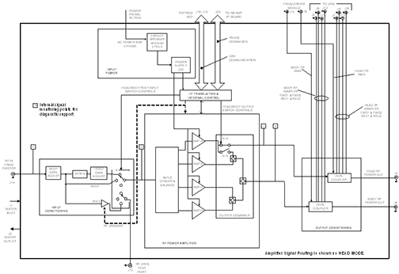
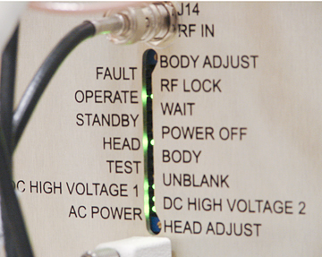
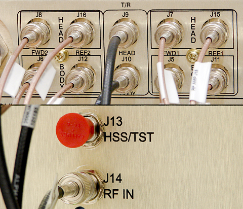
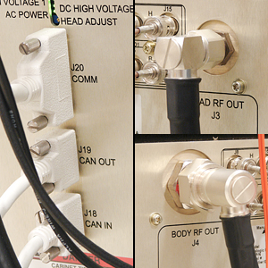
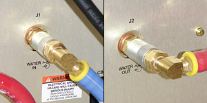
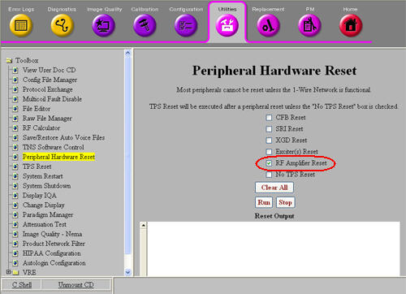

Proprietary to General Electric
Direction 5500113, Rev# 3
Discovery MR750 3.0T Service Methods
Module Version 3.0, Version Date 11/18/08
Proprietary to General Electric |
Provide troubleshooting guidance on the new 3T eXtreme RF Driver (XRFD) RF amplifier.
The 3.0T XRFD RF Amplifier module is the first generation of all solid-state RF power generation at 128MHz for GEHC. The solid-state architecture provides superior linearity and capability over tube technology. The amplifier utilizes water-cooling for better thermal management and to reduce acoustic levels. The communication interface to the host system is based on the CAN open protocol to provide enhanced transfer of information to the system and the capability of a suite of diagnostics.
The XRFD module interfaces with multiple functions in the host system. The CAN link provides communication to/from the XRFD from the Scan Control Processor (SCP) . The Narrow Band Amplifier I/F Board (AIF) provides the UNBLANK control, an emergency shutdown signal, and a rudimentary secondary control/status link to the XRFD. The Exciter provides the small signal modulated RF input. The XRFD interfaces to the Universal Power Monitor (UPM) for patient power deposition (SAR) monitoring. The TR control signals provided by the Driver Module for the system TR switches will be routed through the XRFD. The Power Distribution Module (PDM) in the cabinet provides AC power for the XFRD. Chilled water from the Heat Exchanger Cabinet (HEC) cools the XFRD. And finally, the RF power outputs drive the system RF coils. All connection points to these entities are located on the front panel of the amplifier.
The XRFD amplifier provides the following basic functions:
Head/Body/Test mode output routing
CAN communication link decoding
Control and status communication with the host system
RF power amplification, pulsed and Continuous Wave (CW)
Head/Body RF output gain adjustment
Forward and reflected RF power sampling
Head/Body TR control signal coupling
Diagnostic test support
The XRFD amplifier consists of the following basic functional blocks. For further information, refer to Illustration 1.
Section 2.3.1 - I/F Translation & Internal Control
Section 2.3.2 - Input Conditioning
Section 2.3.3 - RF Power Amplifier
Section 2.3.4 - Output Conditioning
Section 2.3.5 - Input Power
The I/F Translation block converts the CAN link data from the SCP into the appropriate internal control signals to run the amplifier. It provides status information about the amplifier back to the SCP via the CAN link. The I/F Translation block also receives and internally implements the hardwired amplifier gating, emergency shutdown and reset signals that are provided over the secondary control link from the AIF board.
The Input Conditioning block allows for the adjustment of the Head and Body RF input levels, effectively controlling the total gain of the Head and Body RF outputs. It routes the RF input to the RF Amplifier block through the front-end gain mode (Head or Body) as required by the scan. It also provides an RF Test Port output for use in calibration and field service testing purposes with the High Speed Stability (HSS) field service tool.
The RF Amplifier block provides the gain necessary to produce the high power RF transmit pulses needed for MR imaging. It also completes the Head/Body switching function by routing the RF power to the appropriate output port.
The Output Conditioning block contains two dual directional couplers to provide redundant forward and reflected RF power samples from the Head & Body RF outputs to the UPM. The Head and Body TR control signals are coupled into the RF output lines within this block. The Head and Body TR Bias lines are electrically isolated from ground and from each other. The total DC path loss from the TR Bias inputs to the respective Head and Body RF Ports is specified to be very small and controlled.
The Input Power block accepts the three-phase AC power supplied by the system Power Distribution Module (PDM). The Input Power block provides a front panel power-off circuit breaker, with a front panel display to indicate AC power on/off. It also contains any necessary in-line filtering and regulated power supplies necessary to the internal functions of the amplifier.
Illustration 1: XRFD RF Amplifier Block Diagram

| NOTE: | To download a high-resolution PDF version of this block
diagram, click here: |
Illustration 2: Front Panel Displays and Gain Adjustments

Table 1 describes the front panel displays and gain adjustments of the XRFD RF Amplifier.
Table 1: Front Panel Displays and Gain Adjustments
| Status Condition | Definition | Front Panel Label & Display | LED Color |
| Calibration | Body gain adjustment potentiometer | Body Adjust | N/A |
| Fault state | Detection of an amplifier fault condition | Set FAULT indication | RED |
| RFLOCK signal asserted | System has asserted RFLOCK signal | Set RFLOCK indication | YELLOW |
| OPERATE state | Module in OPERATE state | Set OPERATE indication | GREEN |
| Wait state | Module in a transient state (processing a command) | Set WAIT indication | YELLOW |
| STANDBY state | Module in STANDBY state | Set STANDBY indication | GREEN |
| POWER OFF state | Module in POWER OFF state | Set POWER OFF indication | YELLOW |
| Head mode active | Module in Head mode | Set HEAD indication | GREEN |
| Body mode active | Module in Body mode | Set BODY indication | GREEN |
| Test mode active | Module in Test mode | Set TEST indication | GREEN |
| UNBLANK signal active | Presence of UNBLANK (See note beneath this table) | Toggle UNBLANK indication | YELLOW |
| HV Power Supply 1 charged | High voltage supply 1 for XRFD is active/not discharged to a safe level | Set DC HIGH VOLTAGE 1 indication | GREEN |
| HV Power Supply 2 charged | High voltage supply 2 for XRFD is active/not discharged to a safe level | Set DC HIGH VOLTAGE 2 indication | GREEN |
| AC Power applied | AC line power to the amplifier module is ON | Set AC POWER indication | GREEN |
| Calibration | Head gain adjustment potentiometer | Head adjustment | N/A |
| NOTE: | The UNBLANK LED illuminates for a minimum of 100 mSec whenever triggered by the gating signal, regardless of the repetition time of the gating pulses. For repetition times less than 100 mSec, the UNBLANK LED illuminates continuously. |
This section describes the Input, Output, and Coolant connectors on the XRFD RF Amplifier.
Table 2 describes the input connectors for the XRFD RF amplifier. These connectors are shown in Illustration 3.
Illustration 3: XRFD RF Amplifier Input Connectors

Table 2: XRFD RF Amplifier Input Connectors
| Designator | Chassis Label | Description | Connector Type | Signal Type |
| J9 | HEAD TR | Head TR Bias Input | BNC Female | Switching DC control |
| J10 | BODY TR | Body TR Bias Input | BNC Female | Switching DC control |
| J14 | RF IN | RF Input | BNC Female | Low level RF (-4 to 4 dBm) |
| J18 | CAN IN | CAN Communications | 9 pin sub-D, Female | Logic and 24V |
| J20 | COMM | General Communications | 25 pin sub-D Male | RS422 |
| None | None | AC Line Power In | 10ft power pigtail terminated with ring terminals | 3 phase line power |
Table 3 describes the input connectors for the XRFD RF amplifier. Several of these output connectors are shown in Illustration 4. Others are shown in Illustration 3.
Illustration 4: XRFD RF Amplifier Output Connectors

Table 3: XRFD RF Amplifier Output Connectors
| Designator | Chassis Label | Description | Connector Type | Signal Type |
| J3 | HEAD RF OUT | Head RF Power Out | BNC Female | High Power RF with TR Bias |
| J4 | BODY RF OUT | Body RF Power Out | 7/16 DIN Female | High Power RF with TR Bias |
| J5 | BODY FWD 1 | Body Forward RF power sample | Body Forward RF power sample | Low level RF |
| J6 | BODY FWD 2 | Body Forward RF power sample | BNC Female | Low level RF |
| J7 | HEAD FWD 1 | Head Forward RF power sample | BNC Female | Low level RF |
| J8 | HEAD FWD 2 | Head Forward RF power sample | BNC Female | Low level RF |
| J11 | BODY REF 1 | Body Reflected RF power sample | BNC Female | Low Level RF |
| J12 | BODY REF 2 | Body Reflected RF power sample | BNC Female | Low Level RF |
| J13 | HSS/TEST | RF (HSS) Test Port | BNC Female | Low level RF (400 mW ±10%) (26 ± 0.4 dBm) |
| J15 | HEAD REF 1 | Head Reflected RF power sample | BNC Female | Low Level RF |
| J16 | HEAD REF 2 | Head Reflected RF power sample | BNC Female | Low Level RF |
| J19 | CAN OUT | CAN Communications | 9 pin sub-D, Male | Logic and 24V |
Table 4 describes the input connectors for the XRFD RF amplifier. The coolant connections are as shown in Illustration 5.
Illustration 5: XRFD RF Amplifier Coolant Connectors

Table 4: XRFD RF Amplifier Coolant Connectors
| Chassis Designator | Chassis Label |
| J1 | WATER IN |
| J2 | WATER OUT |
The XRFD contains many sensors that permit the monitoring of:
XRFD internal PSU1 and PSU2 voltages
XRFD FET junction temperatures
XRFD input and output peak and average RF power
XRFD head and body S11 and VSWR
These sensors are read by realtime system functions and new diagnostic tools.
Follow these general guidelines for troubleshooting XRFD issues:
Under Error Log menu on the Common Service Desktop check GE System Log for error messages regarding XRFD faults.
Read any extended error messages associated with error fault (error code number highlighted in blue font); perform any recommended actions.
If necessary, execute one or more of the following 5 tools or diagnostics:
For XRFD communication problems execute CAN Link Diagnostic to confirm communication of all devices on the CAN Link including XRFD.
For intermittent faults or those that only happen at a certain power level, execute the RF Power Check Tool.
For image quality problems execute the RF Analysis (RFA) Tool. This tool permits testing and isolation to each component in the transmit chain. For further information, see RFA Loopback Test.
RF Amp Interface Board Level Diagnostics to test operation of NB IF Board in CAM and interconnection to XRFD.
RF Amp Diagnostics to test operation of peak and average forward and reverse power sensors and temperature sensors. This only tests sensor functionality.
There is a useful utility in the system now that allows you to assert the hard-line reset to the amplifier if you think the microprocessors in the amp have become locked up. It is a bit more aggressive than the CAN node reset executed by TPS. In the past, this required a hard reset. To access this utility from the Common Service Desktop, select the Utilities tab and in the Toolbox select Peripheral Hardware Reset. Clear all check boxes except RF amplifier Reset before running the utility.
Illustration 6: Peripheral Hardware Reset Utility

A poor load on either the body or head transmit line can cause RF amplifier faults. Oftentimes, connecting the failing port to the 35 kW dummy load from the power measurement kit can make this clear. Be sure to run the dummy load fan.
The RF Amp Power Check Tool can provide information not only about output RF power, but also input RF power, unblank period, PSU voltages, etc.
RF amplifier faults usually have an associated extended error message in the GE System Error log.
View XRFD PSU voltages realtime by typing mgd_term from c-shell windows, then in SCP window at prompt type printVolts. See the RF Amp Power Check Tool document for tolerance limits.